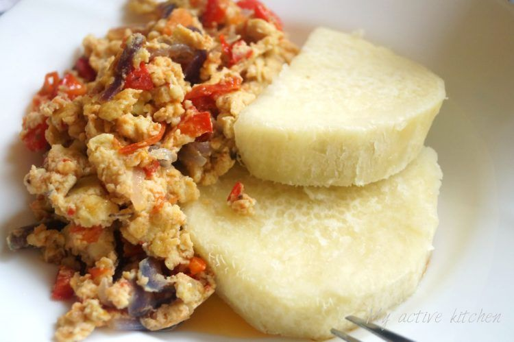
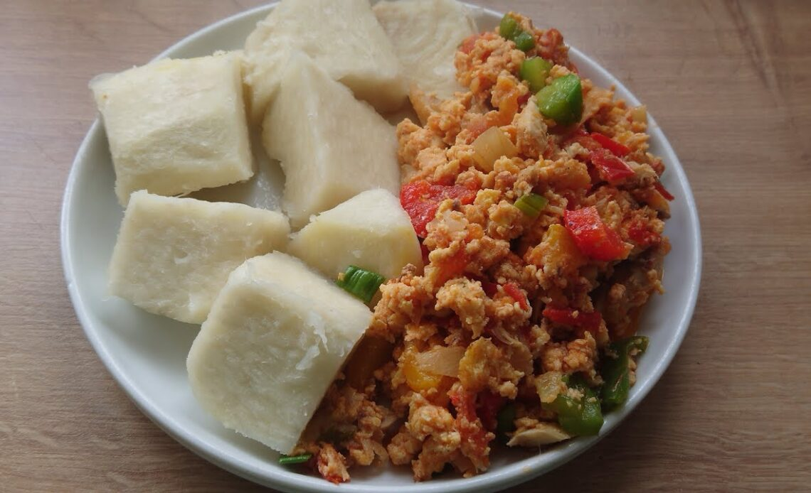
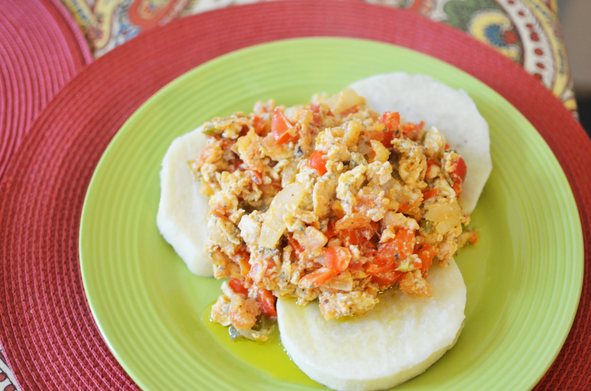
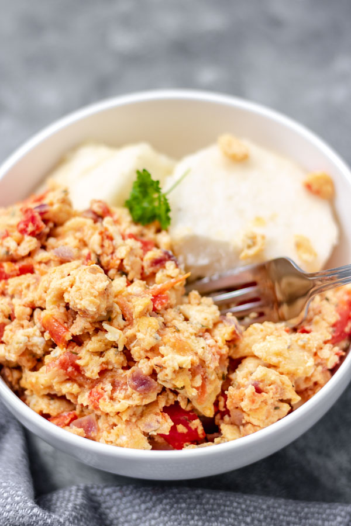

Yam
Yam is a very important common food crop in West Africa and one of the best especially when eaten with fried eggs.
| Ingredients |
Measurement |
| Yam |
A tuber |
| Onion |
A small bulb |
| Table Salt |
A teaspoon |
| Water |
A bowl |
| Eggs |
4 eggs |
| Tomato |
4 tomatoes |
Steps to take
- Cut off the ends of the yam and cut into slices
- Peel the slices and place in a bowl of water to prevent bowning
- Wash the yam slices under running water to remove dirt
- Place in a saucepan filled with water .The pot should not be too full
- Add a pinch of salt and cover the pot
- Place over medium heat and allow to cook for about 20mins
- Chop the onion and tomatoes
- Heat vegetable oil in a skillet
- Stir in chopped tomatoes and onions until coated
- Add Salt and flavors and let it cook for 3mins
- Slowly pour in the beaten eggs in a circular motion
- When cooked,set aside and let simmer
- Serve with Yam
Images

- 
- 
- 
- 